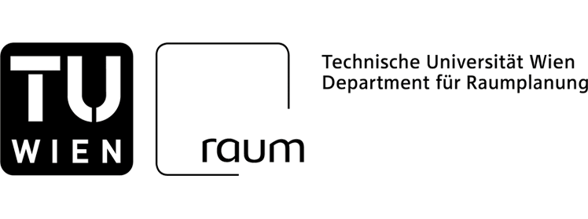
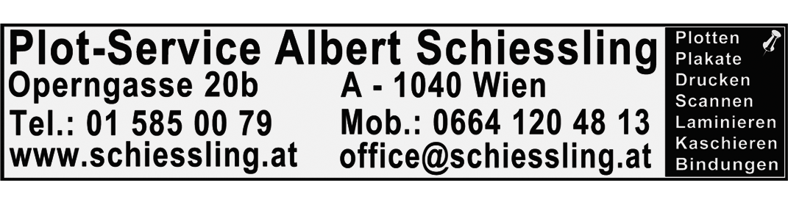
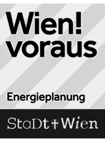
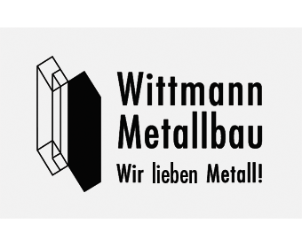
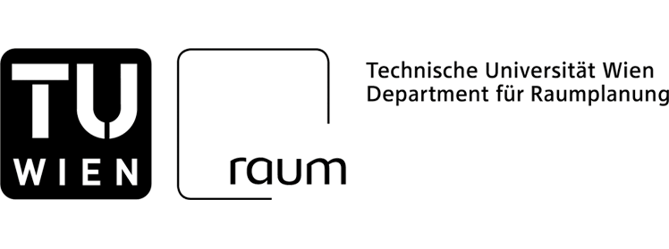
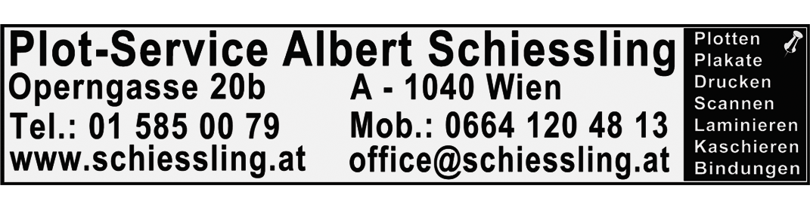
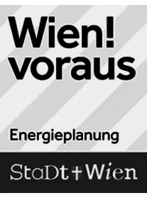
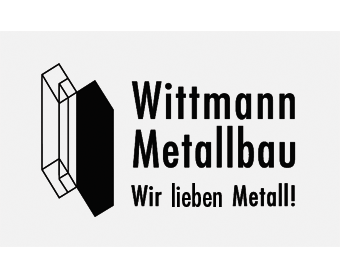

Diplomarbeiten aus Architektur und Raumplanung
Ort
Erzherzog-Johann-Platz 1, 1040 Wien
Öffnungszeiten
Mo-So, 12:00 bis 19:00 Uhr
KuratorInnen
Thomas Amann
Alexander Hagner
Teresa-Elisa Morandini
Kurt Weninger
Studienassistentin
Sarah Bernhard
Gestaltung
Process - Studio for Art and Design
Die archdiploma findet im Herbst 2017 zum zehnten Mal statt. Im biennalen Rhythmus zeigt die Fakultät für Architektur und Raumplanung in dieser Ausstellung Diplomarbeiten beider Studienrichtungen aus zwei Jahren.
Im Zuge der Archdiploma 2017 betrachtet das KuratorInnenteam jene siebenhundertsiebenundsiebzig Diplomarbeiten, die zwischen März 2015 und Jänner 2017 abgeschlossen wurden, als Universum. Es zeigt ein vielfältiges Spektrum an Themen, Zugängen und Methoden: In stadt- und raumplanerischen Arbeiten, architektonischen Entwürfen, Materialexperimenten und 1:1-Interventionen werden diverse soziale und räumliche Kontexte erschlossen und Maßstäbe bearbeitet. Das Universum aus Diplomarbeiten ist Spiegel der Fakultät sowie der Ausbildung an ihr. Als solches verrät es viel über das Studium sowie darüber worin angehende ArchitektInnen und PlanerInnen ihre Aufgabe sehen.
Die Archdiploma 2017 zeigt Diplomarbeiten, die sich in besonderem Maße auszeichnen. Sei es beispielsweise durch eine besondere Bearbeitungstiefe, die Brisanz des gewählten Themas oder den Anspruch Grenzen auszuloten. Mit der diesjährigen archdiploma werden neben Diplomarbeiten vor allem auch Persönlichkeiten in den Fokus gerückt. AusstellerInnen werden nach persönlicher Motivation, Antrieb und Haltung gefragt. In Ausstellung und Katalog entsteht auf diese Weise eine Collage aus fachlichen und persönlichen Inhalten, die Aufschluss über Ansprüche, Werte und Überzeugungen einer künftigen Generation von ArchitektInnen und PlanerInnen gibt.
Zur archdiploma findet ein Veranstaltungsprogramm statt, welches Inhalte der Ausstellung auf einer diskursiven Ebene aufgreift und zum Gegenstand von Debatten, Workshops und Lehrveranstaltungen macht.
Die Archdiploma 2017 wurde im Winter- und Sommersemester in die Lehre eingebunden. Gegenstand waren Kriterien für den Selektionsprozess/das Auswahlverfahren sowie der Ausstellungsraum.
    
   